Mid2BMSを使ってみた
yuinore
2014/04/01
第１章 Hydrogen Blueback
１．DTMをする際の特別な注意事項はいくつかありますが、その点を細かく指摘するのはまた別の機会にしましょう。いくつか挙げるとすれば
・ベロシティを無闇に使いすぎない（キー音が増加するのを防ぐため）
・ゲート（音の長さ）を揃える（キー音が増加するのを防ぐため）
・クオンタイズする（ズレ譜面を作りたい場合でもせめて192分音符以下に抑えてクオンタイズしましょう）
などです。必ずしも守る必要はありませんが、可能であればこれに従ったほうがよいでしょう。（ノートオンがクオンタイズされていないmidiを使用するとBMSの配置がずれるという既知のバグがあるので注意）
２．まずプロジェクトファイルを開きます。
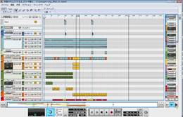
３．このプロジェクトを、オートメーションの使用具合などを考慮しながら、以下の説明に従ってblue、red、yellowに分けます。どれかが空集合でも構いません。
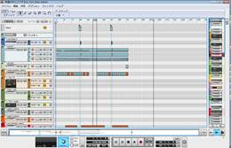←基本はblue
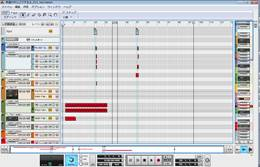←オートメーションが伴うならred
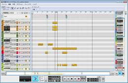←キー音にしない音はyellow
４．ではまずはblueについて音切りをしましょう。blueプロジェクトを別名で保存し、midiファイルを書き出す準備をします。不要なトラックを削除して、トラック名を互いに異なるような整合性のあるものにします。半角スペースや全角文字は使用しない方が良いでしょう。
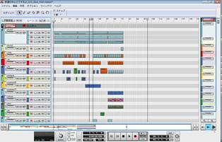
５．midiファイルを保存します
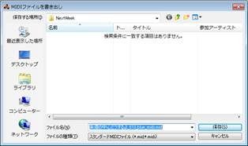
６．書き出したmidiファイルをドラッグ&ドロップし、「tanon_smfをシーケンスレイヤーとして書き出す」にチェックを入れた後、Startボタンを押す
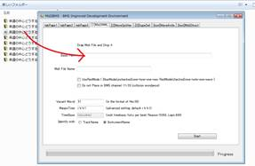
この後トラックリストの確認画面が出ます。「変更する」をクリックしたあと、以下の説明に従って設定を変更してください。
トラック名に誤りがあるトラック → トラック名を修正
BMSに1鍵盤1レーンとして配置したい場合、
特にドラムパートの場合 → Drums?にチェック
特定のトラックを無視したい場合 → Ignore?にチェック
和音を１つのキー音として扱いたいトラック → Chord?にチェック
７．出力されたtext3_tanon_smf.midをblueプロジェクトに読み込みます。
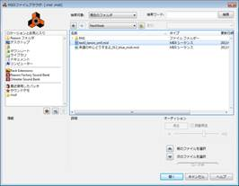
８．以下では音源を単一wavファイルとするものとして進めます。読み込んだmidiをトラックに配置します。（トラックごとの複数wavファイルとする場合は、センドリターンがBGMトラックに追加されることに留意してください。）
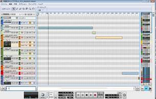
９．ソングの書き出し範囲を適切に設定し、音声をwavファイルに出力します。時間がかかりますので、気長に待ちましょう。
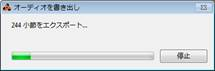
１０． 下図のようにファイルをドラッグ＆ドロップし(注：wavesplitter_input.txtの代わりにtext5_renamer.txtをドラッグ＆ドロップしてください)、単一ファイルである場合はチェックボックスにチェックを付けます。
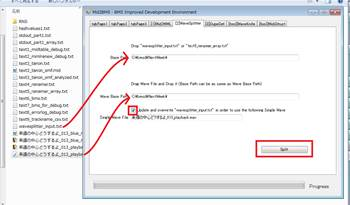
１１． Splitボタンを押して音切りを開始します。
１２．
text6_bms.txtのバックアップコピーを取り、別名で保存します。その上で元のtext6_bms.txtファイルをtext6_bms.bmsに名前変更し、更にいくつかの重要な定義を追加します。その重要な定義とは、#TITLE、#BPM、#PLAYERです。（可能であればBMSEを用いることが望ましい。）その後、このbmsファイルをrenamed/フォルダにコピーします。
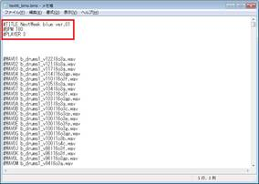
１３． BMSプレイヤーでBMSを開き、正常に変換されたかどうか確認します。正常に変換できていなかった場合はここからが本当の闘いとなります。
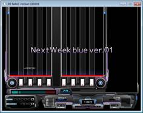
第２章 RED ZONE
１４． 次にredを音切りして行きましょう。redというのは簡単には「困ったちゃん」のことであり、「簡単には音切り出来ないがキー音にしたい音たち」のことです。
１５． redで音切りをする場合も、midi書き出し用のプロジェクトを作ります。先ほどと同様に、不要なトラックを削除し、適切にトラック名などを設定します。ただし今回は更に、「同じ音は１回」という原則を守る必要があります。例えば以下の画像では、緑色のクリップ及び青色のクリップは、それぞれ全く同じ音を出すので、それぞれ１度だけ出現しなければなりません。通常は最初のクリップを残して残りを削除します。
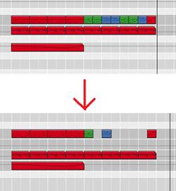
１６．
もしMidiSeparator（後述）を使用する場合は、ノートレーンとオートメーションレーンを同一のMidiトラックに格納します。（注：[1]Mid2MMLの画面上で「tanon_smfをシーケンスレイヤーとして書き出す」にチェックを入れる場合はこの限りではない）（どのような範囲が同一のMidiトラックとして書き出されるかはDAWによって異なると思いますのでここでは詳しくは書きません。）redに分類される音が少ない場合はMidiSeparatorを利用する必要はありません。
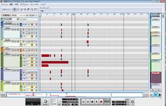
１７． midiファイルを書き出します。
１８．
書き出したファイルを変換します。この際、(1)チェックを２箇所付けること (2)先ほどバックアップしたファイルのWAV定義で、使用されているものの一番大きい番号よりいくつか大きい定義番号を入力すること の２つに注意します。（注：「Vacant Wavid」のすぐ右にある「<=」ボタンを押すことでこの値を自動補完することができます）
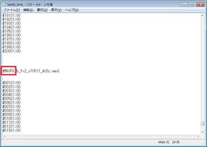
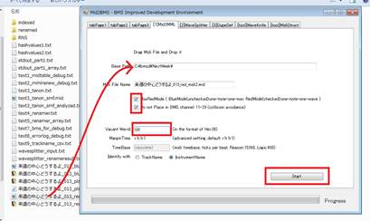
１９． Startを押して変換開始します。
２０．
以下ではSeparate
Midi を使用する場合ものとして解説します。[tool]MidiStructタブを開き、先ほどのMidiファイルをドラッグ＆ドロップしたあと、Separate Midiボタンを押します。
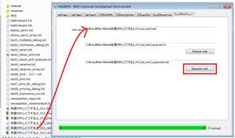
２１．
書き出されたfoobar_separated.midをtanon_smf_red.midをredプロジェクトに読み込みます。正しく音声が書き出される状態に修正します。
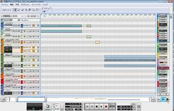
２２． 音声を書き出します。暇なら腹筋でもしてはいかがでしょうか。
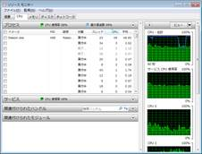
２３． ヤッテヤルデス！
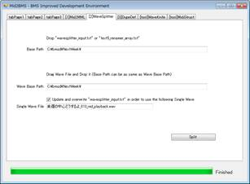
２４． 以前バックアップを取った.txt形式のままのblueのbmsと、新しく書き出されたtext6_bms.txtを連結し、最低限必要な情報を追加してbmsファイルとして保存します。これをrenamedフォルダにコピーします。
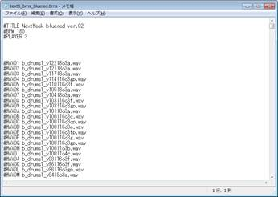
２５． BMSプレイヤーでBMSを開き、正常に変換されたかどうか確認します。正常に変換できていなかった場合はここからが本当の(ry
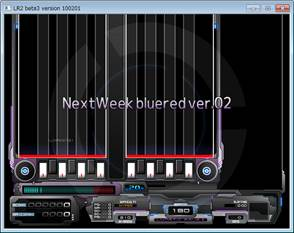
２６． redでは「同じ音は１回」という原則に基づいて音切りをしたため、削除した音を復元する必要があります。そのためBMSEやiBMSCでノーツをコピーしなければなりません。ここは手作業になるため、面倒ですが頑張って下さい。自動化するための良い方法、ありませんかね。
第３章 yellow head joe
２７． 最後にyellowを配置したいと思います。yellowは、手動で音切りをする方法と、全トラックのBGMを合成した後でWaveKnifeを使って分割する方法が考えられます。今回はyellowに相当するトラック数が多く繰り返しも少ないので後者を採用します
２８． まず、BGMに相当する範囲を書き出し範囲にセットし、wavファイルとして書き出します。
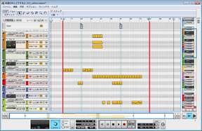
２９． [tool]WaveKnifeタブを開き、必要事項を入力して、Splitボタンを押します。
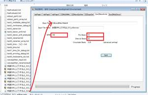
３０． WaveKnifeフォルダに書き出されたファイルが格納されます。このファイルの中身を確認し、必要に応じて無駄な無音部分を削除します。
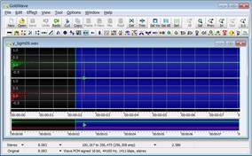
３１． 以下の対応表を参考にし、BMSEを用いて書き出された音をBMSに配置します。※画像はイメージです
１音目から２音目までの拍数 ＝ “Pre Beats” – “Crossfade Beats”
２音目から３音目までの拍数 ＝ “Interval Beats”
３音目から４音目までの拍数 ＝ “Interval Beats”
以下同様
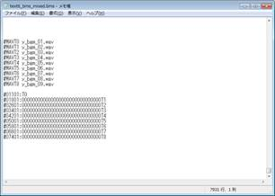
３２． BMSプレイヤーでBMSを開き、正常に変換されたかどうか確認します。正常に変換できていなかった場合(ry
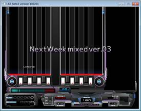
３３． もしここまでの作業が完了して配置していない音が残っている場合は、手動で配置します。これで残す作業は重複定義のみとなりました。
第４章 Have a good dream.
３４． すべての音が配置されていること、wavファイルが揃っていることを確認します。oggファイルには対応していませんので、wavファイルに変換しておきましょう。Oggファイルにしてしまった後でも問題ありません。
３５． BMSEでbmsを開き、FileメニューからShow Conversion Wizardを開き、Sort Wave Definition List（うろ覚え）を実行します。(注：任意です)
３６． 必要事項を入力した後、DupeDefボタンをクリックします。
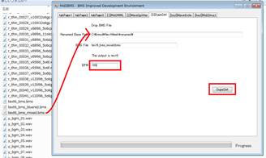
３７．
dupedef_text5_bms.txtをdupedef_text5_bms.bmsにリネームし、書き出されたファイルの#TITLEなどを修正したあと、BMSプレイヤーで再生確認します。
お疲れ様でした。いかがでしたか？ここまでたどり着いた皆さんならば、きっと、もう二度とBMSを作ろうなどとは考えないだろうと思います。この経験を活かして、輝かしいビジネスパーソンとなっていただければ幸いです。それでは、さようなら。
おまけ
GoldWaveで音の末尾の無音を綺麗に削除する方法：
Batch Processing で以下の内容を入力すると良いかもしれない
Edit Set Marker/Selection [T-0] - [T-0]
Edit Insert Silence 0.002
Edit Set Marker/Selection [0] - [T-0]
Edit AutoTrim 0.002s, -36.00dB, Trailing
Edit Set Marker/Selection [T-0.002] - [T-0]
Effect Fade Out <GoldWave*> Full volume to silence, linear
Edit AutoTrim 0.000s, -90.00dB, Trailing